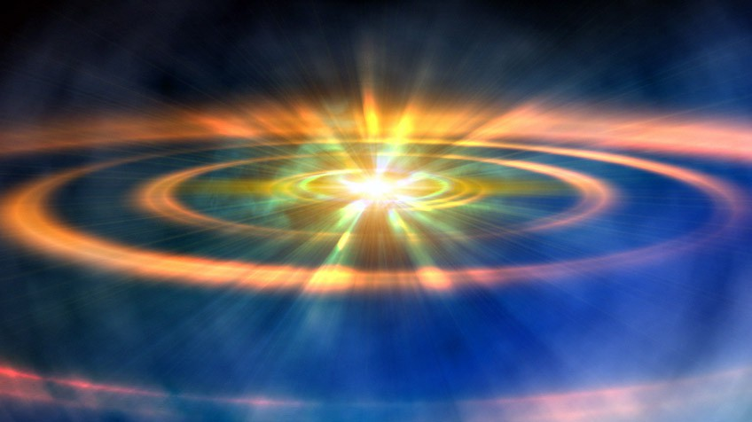

BIG BANG
  Segun esta teoría (Big Bang Theory), la materia era un punto infinitamente pequeño y de altísima densidad que, en un momento dado, explotó y se expandió en todas las direcciones, creando lo que conocemos como nuestro Universo, lo que incluye también el espacio y el tiempo. Esto ocurrió hace unos 13.800 millones de años. Los físicos teóricos han logrado reconstruir esta cronología de los hechos a
Segun esta teoría (Big Bang Theory), la materia era un punto infinitamente pequeño y de altísima densidad que, en un momento dado, explotó y se expandió en todas las direcciones, creando lo que conocemos como nuestro Universo, lo que incluye también el espacio y el tiempo. Esto ocurrió hace unos 13.800 millones de años. Los físicos teóricos han logrado reconstruir esta cronología de los hechos a
partir de un 1/100 de segundo después del Big Bang.
Después de la explosión, al tiempo que el Universo se expandía (de la misma manera que al inflar un globo éste va ocupando más espacio), se enfrió lo suficiente y se formaron las primeras partículas subatómicas: Electrones, Positrones, Mesones, Bariones, Neutrinos, Fotones y un largo etcétera hasta la más de 90 partículas conocidas hoy en día.
Más tarde se formaron los átomos. Mientras, debido a la gravedad, la materia se fue agrupando hasta formar nubes de estos elementos primordiales. Algunas crecieron tanto que empezaron a surgir estrellas y formaron galaxias.
En 1948 el físico ruso nacionalizado estadounidense George Gamow modificó la teoría de Lemaître del núcleo primordial. Gamow planteó que el Universo se creó en una explosión gigantesca y que los diversos elementos que hoy se observan se produjeron durante los primeros minutos después de la Gran Explosión, cuando la temperatura extremadamente alta y la densidad del Universo fusionaron partículas subatómicas en los elementos químicos.
Cálculos más recientes indican que el hidrógeno y el helio habrían sido los productos primarios del Big Bang, y los elementos más pesados se produjeron más tarde, dentro de las estrellas. La teoría de Gamow, aunque elemental y luego rectificada, proporciona una base para la comprensión de los primeros estadios del Universo y su posterior evolución.
La materia existente en los primeros momentos del Universo se expandió con rapidez. Al expandirse, el helio y el hidrógeno se enfriaron y se condensaron en estrellas y en galaxias. Esto explica la expansión del Universo y constituye la base física de la ley de Hubble.
Según se expandía el Universo, la radiación residual del Big Bang continuó enfriándose, hasta llegar a una temperatura de unos 3 °K (-270 °C). Estos vestigios de radiación de fondo de microondas fueron detectados por los radioastrónomos en 1964, proporcionando así lo que la mayoría de los astrónomos consideran la confirmación de la teoría del Big Bang. Las recientes mediciones del corrimiento al rojo de las supernovas, atribuidas de momento a la energía oscura, indican que la expansión del universo, lejos de frenarse, se está acelerando.
El estudio de los agujeros negros y el reciente descubrimiento de las ondas gravitacionales siguen aportando más datos interesantes. Parece que la investigación sobre el Big Bang tiene todavía por delante un largo recorrido.